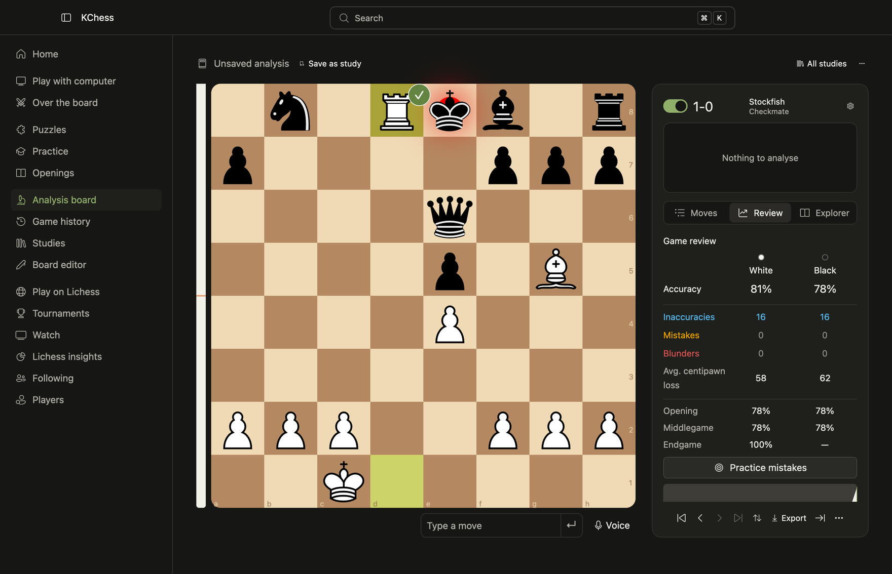
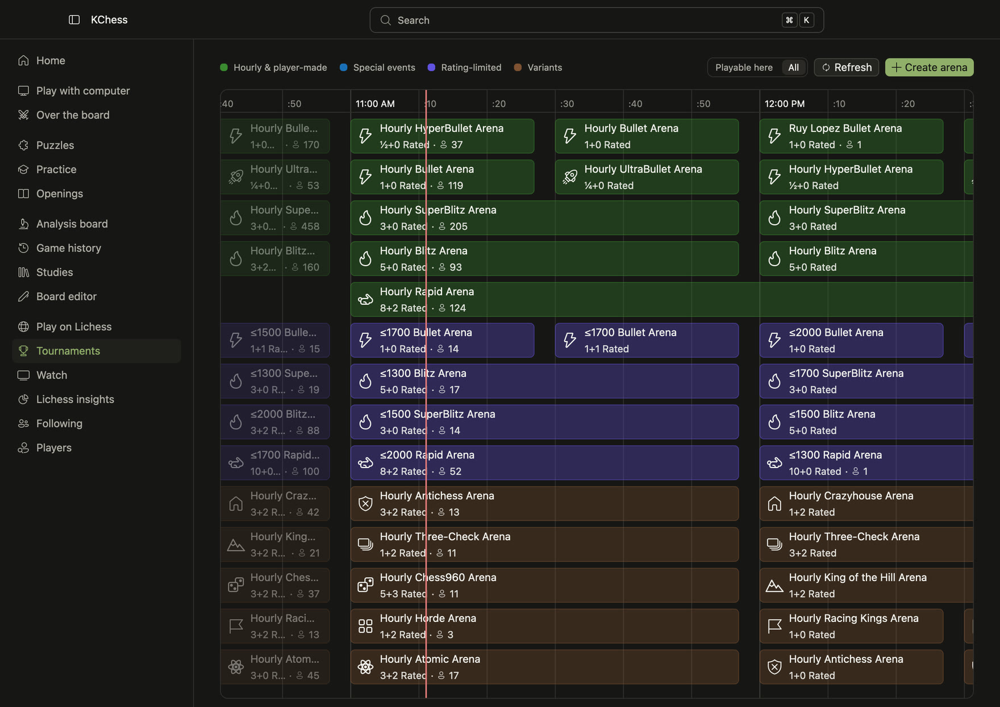
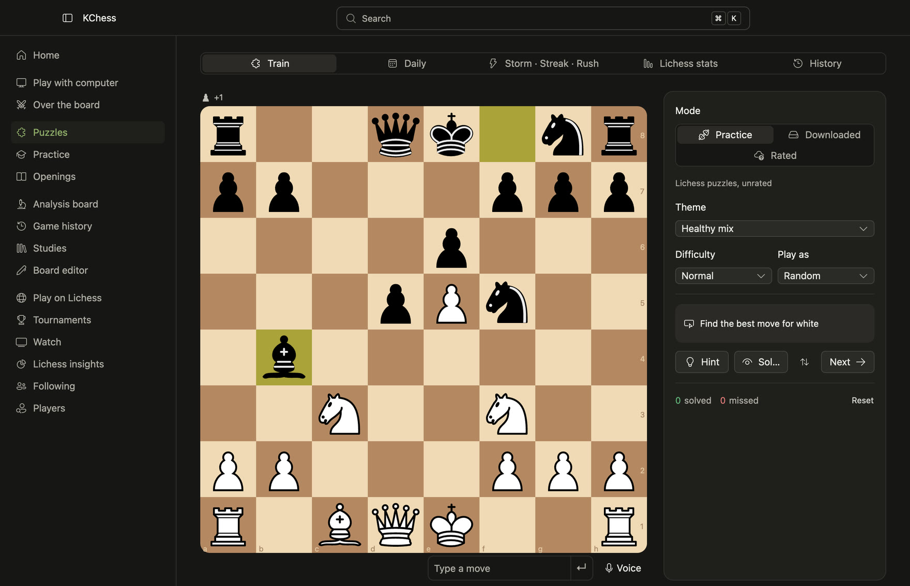

Analysis and review
Engine lines, a full game review, the Masters and Player explorers, and opening names.
A free, open-source chess app written in Rust. Play Stockfish or Lichess, solve puzzles, drill endgames and review every game in one fast, native window.

The official Stockfish ships inside the app, from a gentle beginner to full strength. Connect your Lichess accounts and play rated games with real clocks.

Rated Lichess puzzles count toward your Lichess rating. Storm, Streak and Rush play from a local puzzle database, so they work on a plane too.

Engine lines, a full game review, the Masters and Player explorers, and opening names.
Variations, comments and annotations survive every edit. Import and export Lichess studies.
Say “knight f3” or “castle kingside”. Speech is recognised on your computer.
Follow players, see who is online, watch their live games, Lichess TV and broadcasts.
Your ratings, results and openings across your synced games, and your score against anyone.
Lichess boards, 11 piece sets, 22 colour themes, and your own themes as JSON files.
⌘ K goes anywhere and starts any game. Arrow keys step through every move list.
kchess-cli shares your library with the open app, for scripts and quick games.
Positions and games as PGN, PNG or animated GIF, ready to share.
No KChess account and no KChess server. The app talks to Lichess only for what you ask of it.
Lichess tokens are encrypted, with the key in your Keychain, Credential Manager or Secret Service.
Settings shows each request made, per account, and what is stored on disk.
New versions download in the background and install when you quit, never mid-game.
Every line is on GitHub under the GPL. Read it, build it, change it.
Apple silicon (M1 and later)
If macOS can't verify the developer on first launch: System Settings → Privacy & Security → Open Anyway.